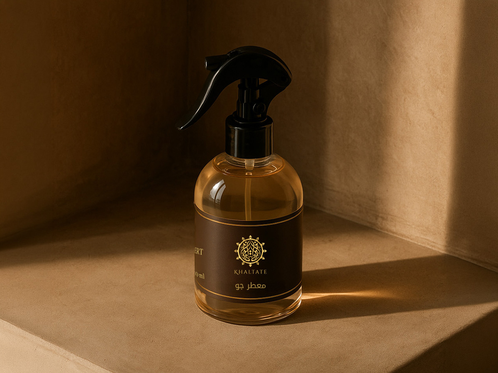
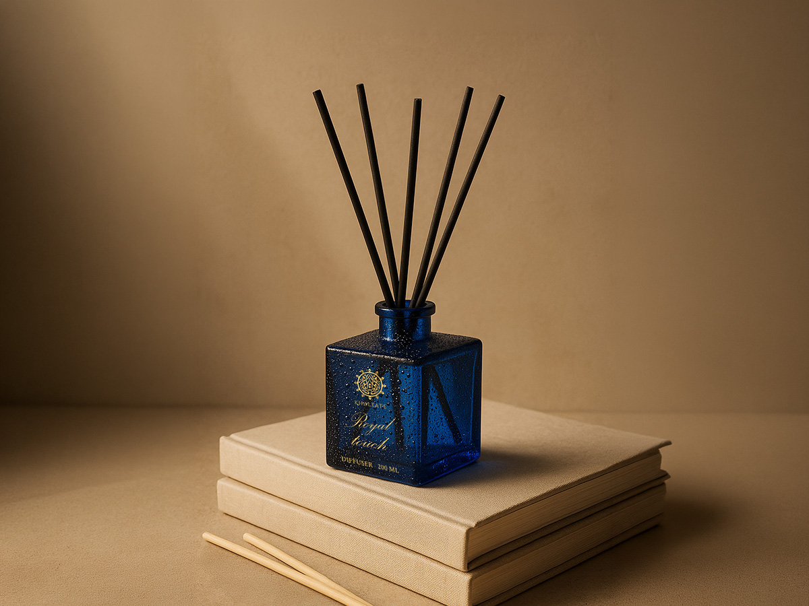
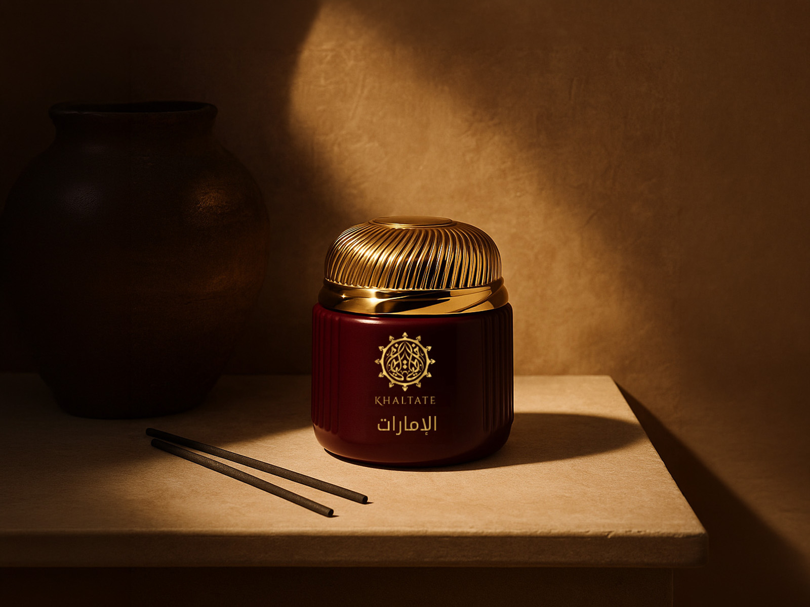

The brief
REPLACE THIS. What was the situation when you picked it up? What was the business actually trying to achieve — a new segment, a price tier, a seasonal push? Two or three sentences. Name the constraint that made it hard: budget, timeline, a crowded shelf, no existing brand recognition.
What I did
REPLACE THIS. Walk through your actual decisions, not a list of tasks. Why that positioning? Why those channels? What did you reject and why?
- REPLACE — the concept and how you arrived at it
- REPLACE — packaging and visual direction
- REPLACE — the channel mix and campaign calendar
- REPLACE — how you produced the imagery

REPLACE THIS with the single most impressive true sentence about this project — ideally with a number in it.
The AI production
REPLACE THIS. This is your differentiator, so be specific. Which tools? How many images, in how many hours, versus what a studio shoot would have cost and taken? Concrete numbers here do more for you than any adjective.


Result
REPLACE THIS. What happened? Sales, engagement, retail listings, production savings, time-to-market. If you don't have hard numbers, say what shipped and how it performed qualitatively — but never invent a figure. An honest "launched across X channels in Y weeks" beats a made-up percentage that falls apart under one follow-up question.
